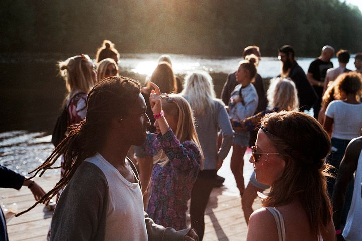

Trænger du til et sabbatår efter gymnasiet, skolen eller din bachelor?
Så tøm hovedet for skoletræthed og rejs ud i verdens bedste sabbatår!
Med Global Contact får du chancen for at stille din udlængsel og kickstarte dit sabbatår med en rejse til udlandet, som bliver en oplevelse for livet.
Rejs i dit Sabbatår – og vælg mellem 25 af verdens lande!
Drømmer du om et fri-år fra studierne og en pause fra pres og krav om karrierevalg, eller har du bare lyst til at opleve noget mere af verden, før du beslutter dig for, hvad du vil studere eller arbejde med?
Har du lyst til at bruge dit sabbatår på at udvide din horisont og opbygge et stærkt fundament til din videre vej gennem studierne, din karriere og livet generelt?
Så brug en periode af dit sabbatår på at rejse udenlands med Global Contact og grib chancen for at udvikle dig i en fremmed kultur, mens du bliver klogere på dig selv og verden udenfor.
Hos Global Contact har vi programmer i 25 lande fordelt over Afrika, Asien, Latinamerika og Mellemøsten, og vil du med, kan du komme afsted i alt fra et par uger til et halvt år. Har du ikke fået stillet din eventyrlyst efter denne periode, kan du vælge at bruge noget mere af dit sabbatår på samme måde som så mange andre; benytte destinationen som et afsæt til at rejse videre ud i verden på egen hånd. Eller måske sammen med nogle af dine nye venner…
Brug dit sabbatår på højskole eller frivilligt arbejde i udlandet
Hvad enten du har lyst til at bruge dit sabbatår på højskole eller frivilligt arbejde i udlandet, er det nemt og fleksibelt at tilpasse udlandsopholdet til lige netop dine ønsker.
Se selv i vores guide herunder og læs mere om dine mange muligheder for at få verdens bedste sabbatår!
Sabbatår med frivilligt arbejde
Der findes mange fede frivilligprojekter udenfor Danmark, og hvis du rejser ud som frivillig i dit sabbatår, vil du virkelig opleve, at du gør en forskel – både for dig selv og andre!
Du kan fx undervise i engelsk i Nepal, oplyse om HIV/AIDS i Kenya eller arbejde på et børnehjem i Bolivia.
Når du rejser ud som frivillig, bor og arbejder du tæt med de lokale, og det er en helt unik måde at lære om andre kulturer og opleve verden på. Du vil typisk arbejde 20-25 timer om ugen, og der vil være masser af fritid, hvor du kan bruge din sabbat til at udforske landet, du er rejst til.
Gør dit sabbatår efter gymnasiet til en oplevelse for – og til – livet
Mange tidligere frivillige beskriver deres sabbatår med arbejde i udlandet som deres livs oplevelse. Og udover at få en oplevelse for livet, føler mange unge også, at de bliver meget bedre rustet til livet og de valg, der ligger forude vedrørende studier og karriereretning. Derfor oplever vi hos Global Contact også, at mange af dem, der bruger deres sabbatår efter gymnasiet på frivilligt arbejde i udlandet efterfølgende har meget nemmere ved at vælge en studieretning, som føles rigtig og giver mening.
- om frivilligt arbejde
- vælg land
- arbejdstyper som frivillig
- Vælg arbejdstyper
- Læs mere
Sabbatår med højskoleophold i udlandet
Hvis du hellere vil bruge dit sabbatår på et højskoleophold i udlandet, giver vi dig også muligheden for at vælge mellem flere lande og ophold af kortere eller længere varighed.
Hos Global Contact arrangerer vi både korte og lange højskoleophold i Asien og Afrika. Rejs fx 3 uger på sommerhøjskole i udlandet eller brug 4 måneder af dit sabbatår på et højskoleophold i Kenya.
Vi har stor erfaring med kulturmøder, og med Global Højskole kombinerer vi denne erfaring med højskoletraditionen, hvor fællesskab, oplevelser og læring er i centrum.
Rejs ud på dit livs eventyr og brug sabbatåret på en højskole i udlandet. Med dig hjem i bagagen får du et internationalt netværk og venner for livet.
En kort og billig rejse i sabbatåret
Hvis du tager et sabbatår efter en bachelor, er der sikkert ikke den store opsparing at rejse for. Og måske har du heller ikke et helt år, men blot en sommerferie til at tilfredsstille din udlængsel?
Hvis du ikke har tiden til et længere ophold eller penge nok til at holde fri så længe, giver Global Contact dig også mulighed for at vælge en kort og billig rejse i sabbatåret.
Du kan fx rejse med på en af vores Work Camps, som er et populært valg blandt mange unge, som både vil kunne rejse og arbejde i sabbatåret. Her er du sammen med en gruppe på typisk 10-20 internationale unge i 2-3 uger, hvor I hjælper til på et lokalt projekt og har rig lejlighed til at opleve landet i fritiden.
De billigste rejser til dit sabbatår
De fleste Work Camps er i Europa, og de billigste rejser får du for kun kr. 1.900,- inklusiv kost og logi.
Vi har Work Camps i 60 forskellige lande, og vil du rejse længere væk i dit sabbatår, kan du også rejse til camps i lande som eksempelvis Japan, Vietnam, Uganda eller Indien. Du finder alt om vores Work Camps her.
Grib chancen og tag afsted!
Grib chancen i dag og brug dit sabbatår på noget meningsfyldt, som giver både dig selv og andre værdi. Det eneste, du risikerer, er, at få venner i hele verden, oplevelser for livet – og et plus på CV’et!
Et sabbatår i udlandet er en fantastisk investering i din fremtid!
- global contact
- 3 ugers højskole i Jordan, Kenya, Myanmar eller Palæstina
- Work Camp
- 2-3 ugers frivilligt arbejde med unge fra hele verden
- Sommerhøjskole
- højskoler
- 4 ugers højskole med tema om frivilligt arbejde
- Korte højskoleophold
Tag af sted...
...og få erfaring, venner, oplevelser, god samvittighed og et plus på CV’et – et sabbatår i udlandet er en fantastisk investering i din fremtid!
|  |  |
 | | |
Kontakt:
UngFriÅr
Mobil: +4591566690
Adresse: Kovshøjsvej 25, 2860 Søborg